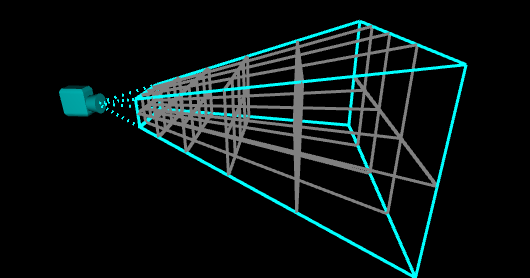
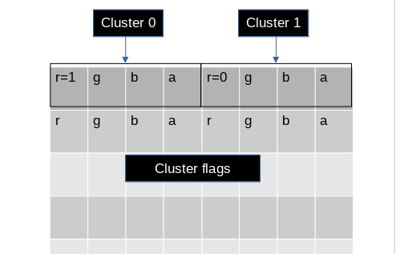
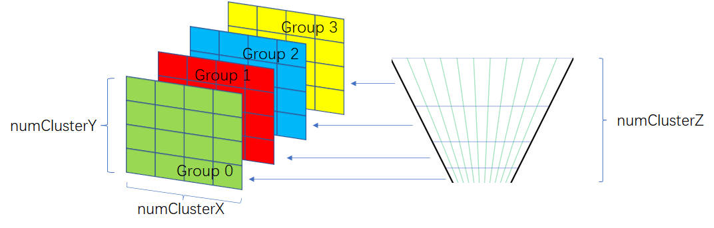
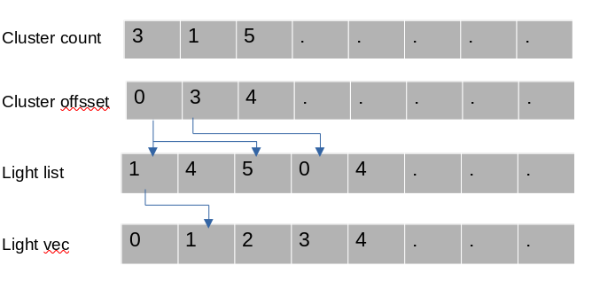

- 基本概念
cluster shading是将相机的Frustum按x y z切块成cluster，记录每个cluster 受哪些实时光源影响，再对有效的cluster进行光照计算。

痛点
解决tbdr和观察物体有强关联，在深度不连续的地方，会导致开销增大的问题。基本步骤
pre depth,只渲染不透明物体
计算保存 有效的cluster
根据lighting(pos,range)计算得到lighting bounds,并根据lighting bounds得到每个cluster命中的lighting count
遍历所有cluster的lighting count,累加至lighting total,并记录每个cluster在lighting total累加时的总量，记作offset
遍历所有lighting,根据lighting bounds遍历其中的有效cluster,累加当前cluster count和总的offset将light index记录在light list中
根据offset和lighting count读取cluster光照信息进行光照计算
基本实现
pre depth 此为优化项，搭配ssao msaa食用更美味。计算保存 有效的cluster
点位： 世界坐标系 转换到 相机坐标系 ，由相机坐标系 点位 得到深度信息
1
vec4 view_pos = ubo_in.view * world_pos_in;
将frag_pos.xy view_pos.z转换得到当前点位的分簇 x y z坐标1
2
3
4
5
6
7uvec3 view_pos_to_grid_coord(vec2 frag_pos, float view_z)
{
vec3 c;
c.xy = (frag_pos-0.5f) / ubo_in.tile_size;
c.z = min(float(GRID_DIM_Z - 1), max(0.f, float(GRID_DIM_Z) * log((-view_z - CAM_NEAR) / (ubo_in.cam_far - CAM_NEAR) + 1.f)));
return uvec3(c);
}- 将当前fragpos的分簇 x y z坐标转化为cluster id
1
2
3
4uint grid_coord_to_grid_idx(uvec3 c)
{
return ubo_in.grid_dim.x * ubo_in.grid_dim.y * c.z + ubo_in.grid_dim.x * c.y + c.x;
}- 保存 有效的cluster
1
imageStore(grid_flags, int(grid_idx), uvec4(1, 0, 0, 0));
- 记录有效的cluster

tips: gl_FragCoord
当viewport 范围 为（0，0，800，600）时， x, y 的取值范围为（0.5, 0.5, 799.5, 599.5）
计算lighting bounds和cluster命中的lighting count
将light pos转化到相机坐标系，根据light range的到最小值和最大值，剔除不在该camera frustum下的lighting,将有效的light pos转化为frag
grid_light_counts 累加每一个cluster对应的count
记录每个cluster在lighting list中的offset
numgroup x y z 设置每个group的size为16
compute_shader对应的线程组

- 生成光照列表
遍历light bounds, 读取有效的cluster的偏移量,

优化方向
资源类型：访问具有空间连续性，使用buffer和贴图有更好的cache命中率。随机访问的特性更强使用ubo减少访问贴图采样次数，如light vec。
贴图格式：根据实际需求，使用最小的texture格式减少带宽，如uvec2使用uint r16b16或者uint r8b8等。
是否带阴影的灯光 在第一张表格中进行区分？如果在光源信息中标识是否带阴影会在shader中多引入动态分支，而在第一张表格中区分可以省去此动态分支，但是需要更大的带宽，需要衡量。